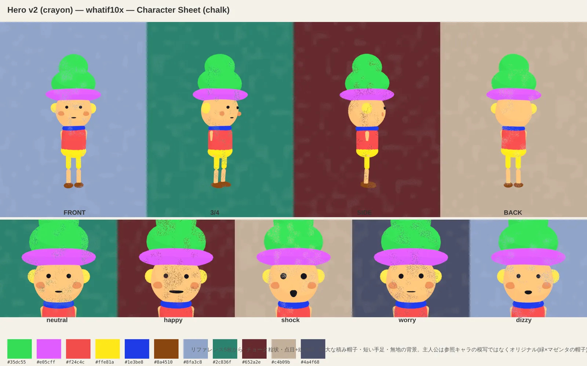
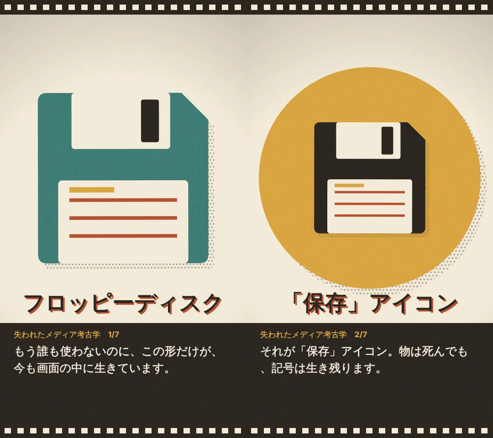

SERVICE A
資料アニメ化
PDFを渡すだけで、解説アニメに。
行政・医療・社内の資料を読み込み、要点を整理した台本からアニメーションまで制作します。数値や制度は出典つきで確認し、誤った説明を避けます。
向いている用途
- 制度・サービス解説
- 研修教材
- 採用説明
- 患者・利用者向け案内
内容はそのままに、見て分かる形へ。
資料をアニメにするだけでなく、そのアニメを動かすキャラクターと世界観までつくります。単独でも、組み合わせてもご依頼いただけます。
PDFを渡すだけで、解説アニメに。
行政・医療・社内の資料を読み込み、要点を整理した台本からアニメーションまで制作します。数値や制度は出典つきで確認し、誤った説明を避けます。
一度つくったキャラが、ずっと働く。
キャラクターシート（正面・側面・背面・表情）とコンセプトアートを制作し、動画・SNS・チラシまで同じ世界観で展開します。
資料と、動画の目的・見てほしい人をヒアリングします。
要点を整理し、ナレーションと絵コンテを作成。数値は出典を確認します。
ご確認キャラクターシートと、世界観の1枚絵を作成します。
ご確認ドラフト動画で確認いただいたあと、仕上げて納品します。
ご確認各工程でご確認いただいてから次に進みます。AIと手作業を組み合わせ、短納期と品質を両立します。
キャラクター設定から図解カット、台本の裏付けまで、制作の途中経過をそのままお見せします。


ナレーションで使う数値は、すべて出典と確認状態を記録してから制作に入ります。
| 主張 | 根拠となる値 | 状態 |
|---|---|---|
| ボルトの100m世界記録は9.58秒 | 最高速 約44.7km/h（Olympics.com） | 確認済み |
| 時速50kmで止まるまでの距離は約28m | 反応1秒で13.9m＋制動14.1m（停止距離の式） | 確認済み |
| マラソンは約51分で走れる | 42.195km ÷ 50km/h | 計算確認 |
| 摩擦熱で靴が燃える | この速度域では成立しない | 不採用 |
60秒前後・キャラクター1体・ナレーション付き
3分前後・図解多め・修正2回
4方向＋5表情＋配色パレット
キャラクターシート＋コンセプトアート＋15秒動画
※税別。内容・尺により変わります。お見積りは無料です。
PDF・Word・スライドなどに対応します。行政や医療の制度資料の制作実績があります。
秘密保持契約を結べます。AIツールは、入力内容が学習に使われない設定・規約のものを選んで使います。
60秒の動画で約2〜3週間が目安です。
台本・キャラクター・ドラフト動画の各段階で修正を受け付けます。
納品物は商用利用いただけます。使用するツールの商用利用条件も確認したうえで制作します。
16:9・9:16・1:1に対応します。